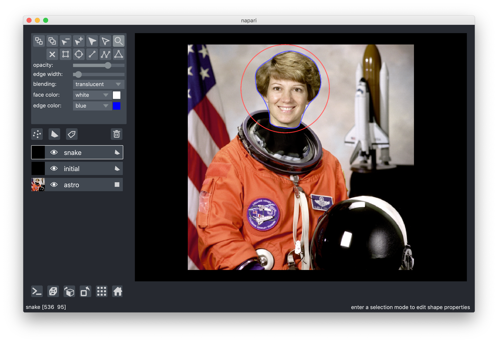

Introducing napari: a fast n-dimensional image viewer in Python
I'm really excited to finally, officially, share a new(ish) project called napari with the world. We have been developing napari in the open from the very first commit, but we didn't want to make any premature fanfare about it… Until now. It's still alpha software, but for months now, both the core napari team and a few collaborators/early adopters have been using napari in our daily work. I've found it life-changing.
The background
I've been looking for a great nD volume viewer in Python for the better part of
a decade. In 2009, I joined Mitya Chklovskii's lab and the FlyEM team at the
Janelia [Farm] Research Campus to work on the segmentation of 3D electron
microscopy (EM) volumes. I started out in Matlab, but moved to Python pretty
quickly and it was a very smooth transition (highly recommended! ;). Looking at
my data was always annoying though. I was either looking at single 2D slices
using matplotlib.pyplot.imshow, or saving the volumes in VTK format and
loading them into ITK-SNAP — which worked ok but required me to constantly be
changing terminals, and anyway was pretty inefficient because my disk ended up
cluttered with “temporary” VTK volumes.
I tried a bunch of things after that time, including Mayavi and even building my own orthogonal views viewer with Matplotlib (which was super slow), but nothing really clicked. What's worse, I didn't see any movement on this — I even found a very discouraging thread on MNE-Python in which Gaël Varoquaux concluded, given the lack of support, that 3D visualisation was not mission critical to anyone and not worth pursuing further. (!) Throughout that time, I kept living with either manually picking out 2D slices, or going back to tools outside of Python, with all the context switching that entailed. The end result is that I was looking at my data far less than I should have been, which slowed down my work. I can't count the number of silly mistakes I made and dead ends I chased, just because I wasn't looking at the data enough.
The beginning
In the meantime though, I was busy improving support for n-dimensional images in scikit-image. In May last year, Nelle Varoquaux organised a joint sprint with developers from scikit-learn, scikit-image, and dask at UC Berkeley, and I was one of the lucky invitees. I'd recently seen that Loïc Royer, a good friend from my Janelia days, had moved to San Francisco to start his lab at the Chan Zuckerberg Biohub, so I asked him if I could crash at his place for a few days before the sprint.
I knew Loïc as a Java guy. In Janelia he'd repeatedly extolled the virtues of
Java to me, and since then he'd worked on some incredible Java software,
including ClearVolume, a super-fast 3D viewer, and ClearControl, a super-fast
microscope control library (you might detect a theme there ;). In fact,
although I love Python and its ecosystem and what we've built with
scikit-image, I've always been intimidated by Fiji and its ecosystem and its
10,000 15,000 citations. Was I deluding myself that Python was important in
biology?
So I was both shocked and delighted when Loïc casually mentioned that he needed a fast nD viewer in Python, and that we should build it together. Loïc had been pushing the state of the art of deep learning in microscopy (and continues to do so), and, despite the hard work of many to integrate Fiji with the major deep learning learning libraries (which are Python), as well as the wider scientific Python ecosystem, it remains challenging to use both together. It might well remain so, because the build, installation, and dependency tooling is so disparate between the two communities. And so that evening, in Loïc's apartment, napari (lowercase n) was born (though it did not yet have a name).
Following on from his work on ClearVolume, Loïc and I agreed on some founding design principles for our tool:
- n-dimensional first;
- native (neither of us likes opening a browser to work);
- blazing fast (GPU-powered);
- native 2D and 3D viewing; and
- minimal new windows and pop-ups, choosing layering instead.
In terms of speed, we knew it was doable, thanks to Martin Weigert's excellent 3D volume viewer, spimagine.
The next week, at the Berkeley sprint, I finally met Kira Evans, a contributor to scikit-image who had made several incredibly technical pull requests, on my favourite topic of extending n-dimensional support, and whom I'd thus asked Nelle to invite to the sprint. She had turned out to be a freshman at Northeastern University, but despite her age she was already doing great things in open source. In general, life is a big accumulation of small decisions you don't even think about. On certain rare occasions, though, you make decisions on which you look back and think, hot damn that was a good decision! Inviting Kira is one of those for me. (Nelle agreed.)
That week at the sprint, Loïc was able to hack out a quick prototype. Meanwhile, Kira was busy helping scikit-image with n-dimensional rotations, LowLevelCallables in C and Cython, and various other crazy things.
I'll take a short moment to acknowledge VisPy, which is the basis for all of napari's visualisation: napari's canvas is a VisPy canvas, its events are VisPy events, and its visual building blocks are VisPy Visuals. I don't know the history of VisPy, but I want to thank all its contributors, especially Almar Klein, who drove it for a very long time, and David Hoese, who resurrected it when Almar could no longer maintain it, and who maintains it today. VisPy is yet another example of open source software being inadequately supported by academia.
The next weekend, on the Caltrain to the Computing History Museum, we worked on choosing a name. After playing around with some terrible acronyms, we decided to continue the theme of Pacific islands begun by Fiji (though Fiji itself is a spectacular recursive acronym, “Fiji Is Just ImageJ”). We needed a starting point, and we settled on the geographic midpoint between Loïc's base of San Francisco and mine of Melbourne. That's in the middle of the ocean, of course, but not too far from the tiny village of Napari, in the Republic of Kiribati. We thought it had a nice ring to it, and the name stuck.
There was a big risk of napari never getting off the ground. Starting a new lab is hard work, and Loïc knew he would not have time to develop it further. He did, however, have some funds available for a summer intern, and after seeing the work Kira did that week, he offered her the internship. (As a result, Kira is now officially a college dropout and full-time software engineer at CZI, the Chan Zuckerberg Initiative.) That summer, under the guidance of Loïc, Stéfan van der Walt, and myself, Kira put together the first implementation of napari as you see it today.
By late summer/early fall, although internally napari was quite a mess, as tends to happen in new, fast-growing projects, functionally it was already impressive enough that Jeremy Freeman and Nick Sofroniew, from CZI's Computational Biology division, started paying close attention. Nick, who'd had similar experiences to mine working with Python and nD images, fell in love with it, and literally could not wait for us to move it forward. He took matters into his own hands.
Initially, Nick brought some brilliant management to napari, instituting weekly meetings that he drove (and continues to drive) like a champion. Those meetings were critical to bringing others into the loop, including Ahmet Can Solak, Kevin Yamauchi, Bryant Chunn, and Shannon Axelrod, who started to make pull requests to improve napari. Pretty soon, though, Nick made his own pull request, and after that it was like seeing a racecar take off. No one has done more for napari than Nick, and Loïc and I owe him an enormous debt of gratitude.
Soon after that, the StarFISH team at CZI adopted napari as their main image viewer, which again helped us discover bugs, improve our UI, and add features. By February, everyone in the project was using it regularly, despite its warts. We started to think about broadening the group of people with eyes on napari.
CZI was organising a meeting for grantees of its Imaging Scientists and Imaging Software Fellows programs in March, which we thought would be a good opportunity to grow the team. Among others, we invited John Kirkham (NVIDIA) and Eric Perlman (then at Johns Hopkins, now freelancing). The CZI meeting was a dramatic demonstration of the power of bringing together people with complementary experience, as John added support for viewing bigger-than-RAM dask arrays in about 20 minutes flat, and Eric massively improved the performance of our segmentation visualisation layer.
I came out of the March meeting thinking hey, this napari thing might have legs! Not only had newcomers been able to improve it quickly without knowing the codebase (which usually points to at least decent design), but we heard over and over from the imaging scientists that viewing and annotating large datasets remained a challenge for them.
So, we started gently expanding the user base, but in hushed tones, full of caveats: “This software we're working on might be useful for you… If you're brave and can work around all the missing functionality… Be sure to report any issues…” One of our most frequent requests, which was indeed part of the napari plan from the very beginning, was 3D volume rendering, and Pranathi Vemuri, a data scientist at the Biohub, implemented that just in time for SciPy 2019. At that conference, Nick presented napari to the public for the first time, because many SciPy attendees tend to not mind working with development versions of libraries. Indeed, we got contributions that week from Alex de Siqueira (from the scikit-image team) and Matthias Bussonnier (IPython).
The biggest revelation for me, though, came immediately after SciPy, when I went to Jackson Lab to teach a workshop on scikit-image. I've taught scikit-image many times before, but for the first time, I went off-script and analysed new data live, on IPython, rather than using Jupyter notebooks pre-populated with toy data. I used napari instead of matplotlib, and found napari's layers model insanely useful to visualise every step of the analysis, one on top of the other, toggling their visibility on and off to compare them. And it was super easy to add interactivity to the mix, clicking on some points in napari, then grabbing those points to use as watershed seeds, and popping the resulting segmentation as another layer to napari.
In the months since then, we've spent a lot of time improving the code, and polishing the little edge cases, like making sure the coordinates reported by the cursor are pixel perfect, merging the previously separate Image (2D) and Volume (3D) layers, and extending 3D and multi-resolution support to all layers.
Thanks to CZI's massive in-house investment in open source, we also actually got an audit for napari's GUI from Lia Prins, a UX designer at CZI — an incredible opportunity that few academic projects get. And, to repeat a familiar pattern, Nick immediately got to work and implemented a bunch of fixes from the audit. To me, this update is what's most pushed me to write this post, as the UI now feels more like a coherent whole than the mishmash of features that results from organic growth of a project.
napari now
As I mentioned at the start, currently, everyone on the team uses napari on a daily basis for their own work. Our workflows actually look quite different, yet napari meets the needs of all of them, in some form or another. Last month we were surprised to find that Constantin Pape, at EMBL, was developing his own viewer, Heimdall, on top of napari, completely independently from us. I'm a big fan of Constantin's work, so little has brought me more joy than finding his repo and reading this comment:
most of the credit goes to napari; it's so great to finally have a decent python viewer.
So, what are those use cases?
1. Just looking at NumPy ndarrays quickly
This is my most common use case. I like to think about and use 2D, 3D, and 4D
images interchangeably. So, I often find myself calling plt.imshow on a 3D
array and being greeted by a TypeError: Invalid dimensions for image data,
after the figure window has popped up, which now stares back at me blank and
forlorn. No more, with napari.view_image. By default, napari will display the
last two dimensions of an array, and put in as many sliders as necessary for
the remaining dimensions.
To illustrate, I'll create a syntethic 4D array of blobs using scikit-image's
binary_blobs function.
import numpy as np from skimage import data, filters blobs_raw = np.stack([ data.binary_blobs(length=256, n_dim=3, volume_fraction=f) for f in np.linspace(0.05, 0.5, 10) ]) blobs = filters.gaussian(blobs_raw, sigma=(0, 2, 2, 2)) print(blobs.shape)
(10, 256, 256, 256)
Now we can look at the volume in napari:
viewer = napari.view_image(blobs)
Thanks to VisPy and OpenGL, the canvas is just blazing fast, and a joy to navigate.
Using napari, we can immediately see that the blobs grow dramatically along the leading axis. With my previous matplotlib workflow, I might have missed that, as I would only look at one or two slices before continuing my workflow in whatever preconceived direction I'd chosen.
We can click on the little cube icon to switch to a 3D view (or type
viewer.dims.ndisplay = 3 in our IPython terminal). Napari will remove
one of the sliders, and display a maximum intensity projection of the volume.
White blobs turn out to not look so great in maximum intensity, so let's look at the 3D view with the famous mitosis dataset from Fiji's sample data (which I think comes from this paper by Griffis, Stuurman and Vale, but I'm not sure...):
from skimage import io mitosis = io.imread('mitosis.tif') # make sure your working directory is right print(mitosis.shape)
(51, 5, 2, 196, 171)
Those axes are time, z, channels, y, and x (TZCYX).
viewer = napari.view_image(mitosis, name='mitosis')
As above, you can see the last two dimensions displayed, then sliders for the remaining dimensions. The sliders are proportionally sized to the number of slices along each axis, making it easy to figure out which axis is what. (This was one of Lia's recommendations that Nick implemented.) (And yes, labeled axes are in our roadmap!)
We want to see the two channels as individual images to overlay, rather than as
an extra dimension. We can do this manually with two add_image calls, or we
can use the view_multichannel function to overlay multiple channels on one
another. Finally, we can add a scale keyword argument to account for the
different scales in xy and in z:
viewer = napari.view_multichannel( mitosis, axis=2, colormap=['magenta', 'green'], name=['aurora-B', 'tubulin'], scale=[1, 10, 1, 1], contrast_limits=[[1500, 6500], [1600, 16000]], )
The alternate way to do this, which you'll need for more complex workflows, is:
viewer = napari.Viewer() viewer.add_image(mitosis[:, :, 0, :, :], colormap='magenta', name='aurora-B', scale=[1, 10, 1, 1], contrast_limits=[1500, 6500]) viewer.add_image(mitosis[:, :, 1, :, :], colormap='green', name='tubulin', scale=[1, 10, 1, 1], contrast_limits=[1600, 16000])
2. Overlaying computation results
As I mentioned earlier, the first time it really hit me how useful napari could be was when I was teaching scikit-image at Jackson lab. Napari uses a layered display model, so you can keep adding layers on top of each other, and change their opacity or visibility on the fly. This makes it really convenient to examine the steps of a pipeline as you process data, and maybe try different methods if the results don't look so great mid-pipeline.
In this example, I open napari from IPython and I keep adding layers as I try different segmentation methods on the coins example image from scikit-image:
3. Annotating data
Sometimes, it can be difficult to get an algorithm to pick out exactly what you want in an image. With the right UI, however, annotation can be extremely fast, and just a little interaction can dramatically help automated algorithms.
from skimage import data from skimage import filters from skimage import segmentation from skimage import morphology import napari coins = data.coins() viewer = napari.view_image(coins, name='coins') edges = filters.sobel(coins) edges_layer = viewer.add_image(edges, colormap='magenta', blending='additive') pts_layer = viewer.add_points(size=5) pts_layer.mode = 'add' # annotate the background and all the coins, in that order coordinates = pts_layer.data coordinates_int = np.round(coordinates).astype(int) markers_raw = np.zeros_like(coins) markers_raw[tuple(coordinates_int.T)] = 1 + np.arange(len(coordinates)) # raw markers might be in a little watershed "well". markers = morphology.dilation(markers_raw, morphology.disk(5)) segments = segmentation.watershed(edges, markers=markers) labels_layer = viewer.add_labels(segments - 1) # make background 0
4. Viewing very large (dask) arrays
Thanks to John Kirkham's work, napari only loads the data that it needs to display. Therefore, virtual arrays such as Dask arrays, HDF5 datasets, and zarr files can be loaded quickly and easily into napari, provided that the individual slices are small enough.
Today's microscopes produce datasets ranging in the hundreds of GB to multiple TB in size. Berkeley's Gokul Upadhyayula has made his lattice light sheet data publicly available. Nick converted this to a zarr file for ease of access.
Now, we can use a dask array to view this 100GB array quickly and easily:
import os from dask import array as da image = da.from_zarr( os.path.expanduser('~/data/gokul-lls/aollsm-m4-560nm.zarr') ) viewer = napari.view_image(image, name='560nm', colormap='magma', contrast_limits=[0, 150_000])
5. Quickly looking at images
When you pip install napari, you also get a command-line client that lets
you quickly view image stacks. Here is a
downsampled, isotropic version of
this image from my colleagues,
Volker Hilsenstein and André Nogueira Alves:
napari ~/data/ovarioles/droso-ovarioles-isotropic.tif
Or the 4D C. elegans embryo from the scif.io example images (unzipping gives a folder of images):
napari ~/data/EmbryoCE
Or a data set of many images, such as the red blood cell spectrin network from my work with Adam Blanch in Leann Tilley's lab (data available from the Open Science Framework here):
napari ~/data/schizonts/*.tif
6. Parameter sweeps
A hat tip to Davis Bennett at Janelia, who came up with this one. Suppose you want to manually find the best threshold for an image. Thanks to dask's lazy evaluation, you can attach a function call to a dimension slider, and use that slider to call the function with many different parameter choices. And napari's dimensions model tries to mirror NumPy's broadcasting rules, so that you can view data of different dimensionality together.
from skimage import data import dask coins = data.coins() def threshold(image, t): arr = da.from_array(image, chunks=image.shape) return arr > t all_thresholds = da.stack([threshold(coins, t) for t in np.arange(255)]) viewer = napari.view_image(coins, name='coins') viewer.add_image(all_thresholds, name='thresholded', colormap='magenta', blending='additive' )
We can even have a bit of fun at the end with 3D rendering... 🙃
This is not just a cute demo. I actually found this trick really useful when investigating a bug in scikit-image. By varying the threshold for h-maxima, I could see detections blinking in and out of existence, even though they are supposed to only decrease as the parameter value is increased, thus confirming that there is a bug in the scikit-image implementation of h-maxima! 😬
And indeed, improving that example for this post, the broadcasting works with points, too, not just images!
image = np.load('heatmap.npy') viewer = napari.view_image(image, name='original', colormap='green', blending='additive') result = np.array([hmaxima(image, f) for f in np.linspace(0.2, 100.0, num=100)]) points = np.transpose(np.nonzero(result)) viewer.add_points(points, name='maxima coordinates', size=3, opacity=0.5) result_image = viewer.add_image(result, name='result', colormap='magenta', blending='additive')
7. Overlay polygons
One of Nick's earliest contributions was one of his biggest: a vector-based "shapes" layer for polygons, rectangles, circles, and other annotations. This makes it very easy to replicate things like the active contours scikit-image example, without having to flip coordinates, because napari is an image-first library:
from skimage import data from skimage import filters from skimage.color import rgb2gray from skimage.segmentation import active_contour astro = data.astronaut() astro_gray = rgb2gray(astro) s = np.linspace(0, 2*np.pi, 400) r = 100 + 100*np.sin(s) c = 220 + 100*np.cos(s) init = np.array([r, c]).T snake = active_contour(filters.gaussian(astro_gray, 3), init, alpha=0.015, beta=10, gamma=0.001, coordinates='rc') viewer = napari.view_image(astro, rgb=True, name='astro') viewer.add_shapes([init], name='initial', face_color=[(0, 0, 0, 0)], edge_color='red', edge_width=2 shape_type='polygon') viewer.add_shapes([snake], name='snake', face_color=[(0, 0, 0, 0)], edge_color='blue', edge_width=2 shape_type='polygon')

8. More!
Nick has been working hard to improve our tutorials, which will have more details about all of the above. Meanwhile, Ahmet Can and Bryant are busy making it easier to use napari to view images live from a microscope, or another source. We look forward to hearing more use cases from you! Your first point of contact to ask for help should be the image.sc forum — don't forget to use the "napari" tag! — as well as our GitHub issues for bug reports and feature requests.
This might be a good time to emphasise that napari is still in alpha, which means that we might change the API at any time. This is not to discourage you from using it, but rather to point out that you should be ready to evolve quickly with it, or pin to the current minor version.
Our vision for the future
At the risk of sounding like a broken record, napari has already proven itself insanely useful for all of us at the team, as well as a few extended members of our community. But we are just getting started. We want to napari to help not just Python practitioners, but also biologists and other scientists who want to access Python's enormous scientific ecosystem, but don't necessarily want to learn Python.
We are working on a plugin system to allow the data from napari layers to be the input to Python functions, and have their outputs appear as new layers. A sneak peek:
We are building this in collaboration with the developers of ImJoy to make our plugins cross-compatible.
In addition to applying functions and seeing the outputs (what ImJoy's Wei Ouyang refers to as functional plugins), we see napari as a basis for more complex interactivity, such as closed-loop learning in the style of Ilastik, skeleton tracing, 3D annotation, and more. We already provide a framework to add or modify keyboard shortcuts or mouse interactivity, so it's possible to write this functionality on top of napari now. But we want to provide a unified framework that will prevent plugins from clobbering each other's functionality.
Our aim for the plugin framework is for every function to produce valid and readable Python code, so that path from performing a set of operations to producing a Python module — and thus a plugin — is perfectly smooth.
At the March CZI meeting, someone asked me whether we would provide a headless mode for napari processing. Yes and no: Our motto developing the plugin system is that napari-headless is just Python. With the recording capability and built-in IPython console, we think that napari could be a platform to teach non-computational scientists the basics of Python, thus providing an accelerated loop converting scientists from users to plugin contributors, and then to library contributors, and improving the whole ecosystem in the process.
Join us!
In a little over a year, napari has grown beyond what I thought possible. But we still have a lot of work to do! In addition to our issues list, we have an open roadmap. Feel free to jump in and join the fray!
We also encourage you to contribute to the many open source projects on which we depend, starting with VisPy: if you have OpenGL experience, they could really use your help! Other libraries we build on include NumPy, SciPy, IPython, QtConsole, ImageIO, scikit-image, QtPy, and PyOpenGL.
Acknowledgements
I've tried to name people's contributions to napari as they happened, but so many have helped to build it, it was impossible to name everyone. Our ever-growing committers list can be found on GitHub, but many more have contributed in countless ways. CZI's Shannon Axelrod and Ambrose Carr helped us make early design decisions when they adopted napari as the main viewer for StarFISH. Charlotte Weaver helped us build a (still upcoming) binary installer, and serves on our Code of Conduct (modelled after SciPy's). Greg Johnson and his team at the Allen Institute have used napari to build a corpus of annotated images — and helped drive the design of napari for that use case.
At the Imaging Kickoff Meeting last March, since CZI had invited me, I was staying at a hotel downtown rather than at Loïc's. One night, Loïc sent me an exasperated message that still brings a smile to my face: “You know, if you'd stayed at your stupid hotel a year ago, there would be no napari.” It constantly amazes me how many things had to line up for napari to exist, let alone be where it is today.
I'm so grateful to everyone who has helped napari get to get to this point. If I haven't mentioned your contribution, please email me and I'll make it right. One nice thing about blog posts is that they are easy to update!
Comments
Comments powered by Disqus